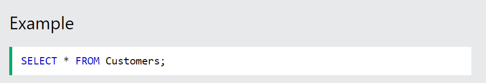

SQL is a standard language for accessing and manipulating databases.
What is SQL?
SQL stands for Structured Query Language
SQL lets you access and manipulate databases
SQL became a standard of the American National Standards Institute (ANSI) in 1986, and of the International Organization for Standardization (ISO) in 1987
What Can SQL do?
SQL can execute queries against a database
SQL can retrieve data from a database
SQL can insert records in a database
SQL can update records in a database
SQL can delete records from a database
SQL can create new databases
SQL can create new tables in a database
SQL can create stored procedures in a database
SQL can create views in a database
SQL can set permissions on tables, procedures, and views
SQL is a Standard - BUT....
Although SQL is an ANSI/ISO standard, there are different versions of the SQL language.
However, to be compliant with the ANSI standard, they all support at least the major commands (such as SELECT, UPDATE, DELETE, INSERT, WHERE) in a similar manner.
Note: Most of the SQL database programs also have their own proprietary extensions in addition to the SQL standard!
Using SQL in Your Web Site .
To build a web site that shows data from a database, you will need:
An RDBMS database program (i.e. MS Access, SQL Server, MySQL)
To use a server-side scripting language, like PHP or ASP
To use SQL to get the data you want
To use HTML / CSS to style the page
RDBMS
RDBMS stands for Relational Database Management System.
RDBMS is the basis for SQL, and for all modern database systems such as MS SQL Server, IBM DB2, Oracle, MySQL, and Microsoft Access.
The data in RDBMS is stored in database objects called tables. A table is a collection of related data entries and it consists of columns and rows.
Look at the "Customers" table:

Every table is broken up into smaller entities called fields. The fields in the Customers table consist of CustomerID, CustomerName, ContactName, Address, City, PostalCode and Country. A field is a column in a table that is designed to maintain specific information about every record in the table.
A record, also called a row, is each individual entry that exists in a table. For example, there are 91 records in the above Customers table. A record is a horizontal entity in a table.
A column is a vertical entity in a table that contains all information associated with a specific field in a table.